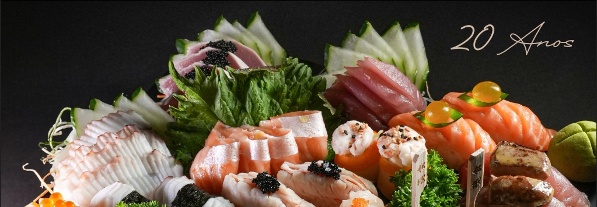
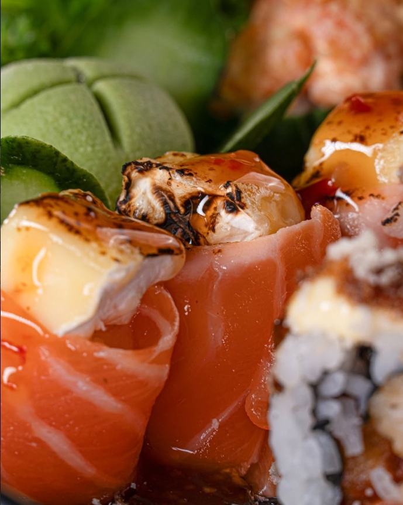
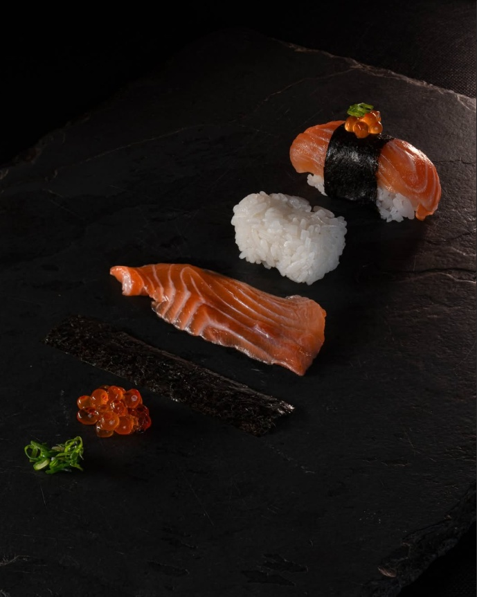
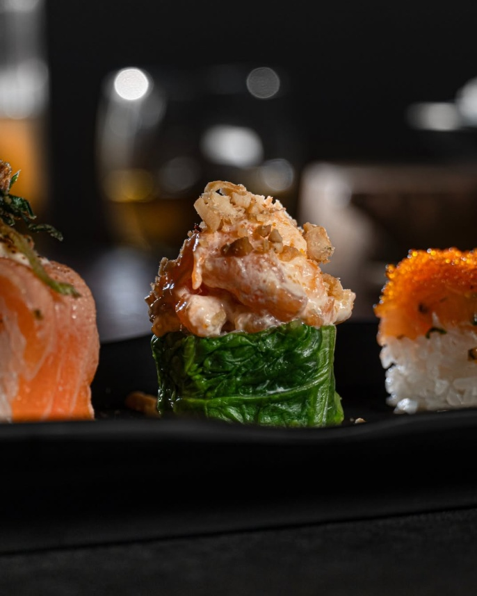
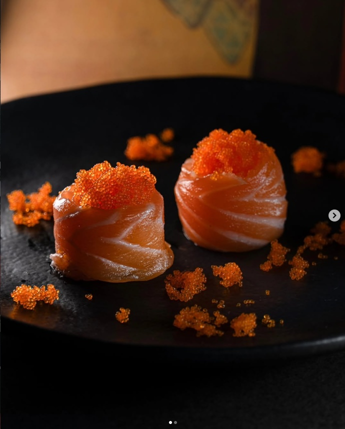

KINPAI SUSHI

Uma paraibana, bem petropolitana e quase japonesa! Morando em Petrópolis há 30 anos e com mais de 25 anos de experiência em restaurante japonês, Nea traz ao Kinpai sua paixão pela culinária com muita criatividade, alegria e a administração de uma equipe premium com atendimento personalizado!




Peça pelo delivery e aproveite nossos pratos preparados na hora, com ingredientes selecionados e o mesmo cuidado servido no restaurante. Pensado para chegar até você com máxima velocidade, qualidade e muito frescor.
PEDIR AGORA NO IFOOD